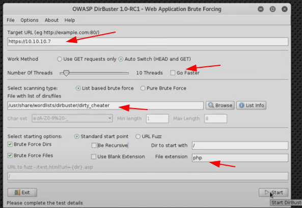

Note:
try another enumeration if can't show anything
gobuster dir -u http://siteisup.htb/ -w /usr/share/wordlists/dirbuster/directory-list-2.3-medium.txt
gobuster dir -u http://10.10.10.56/ -w /usr/share/wordlists/dirb/small.txt
feroxbuster -u <url> -x php
dirsearch -u http://siteisup.htb/dev/
FUZZ FILES:
export URL="http://192.168.53.212/FUZZ"
wfuzz -c -z file,/usr/share/wordlists/SecLists/Discovery/Web-Content/raft-large-files.txt --hc 404 "$URL"
FUZZ DIR:
export URL="http://192.168.53.212/FUZZ/"
wfuzz -c -z file,/usr/share/wordlists/SecLists/Discovery/Web-Content/raft-large-directories.txt --hc 404 "$URL"
Didn't see anything?
Try this:
export URL="http://192.168.53.212/FUZZ.php"
wfuzz -c -z file,/usr/share/wordlists/SecLists/Discovery/Web-Content/raft-medium-words.txt --hc 404 "$URL"
dirbuster
